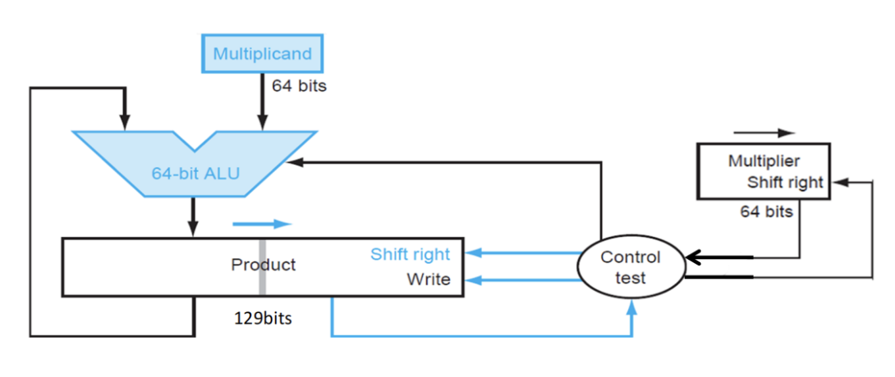
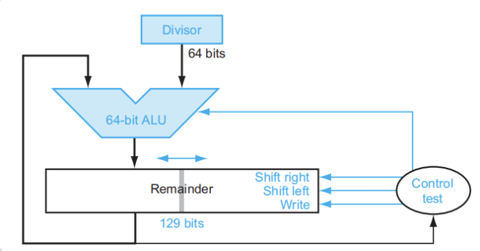

Chap3.Arithmetic for Computer¶
[!note] 考试的时候 \(1\text{ word}=32\text{bit}\) !！
3.1 Signed and Unsigned Numbers¶
Number systems

Signed Number Representation 采用补码 - 正数的补码是它本身 - 负数的补码是它的绝对值各位取反再加 1，并确保最高位是 1
[!example] \(100=-4,101=-3,110=-2,111=-1,000=0,001=1,010=2,011=3\) 即 n-bit 的数可以表示的范围是 \(-2^{n-1}\)~\(2^{n-1}-1\)
3.2 Addition, subtraction and ALU¶
1. Overflow¶
- General overflow conditions

- 对于无符号数，将“溢出”看作进位(carry) 或借位(borrow)，计算机会将其视为一般情况而不做特殊处理
- 对于符号数，有以下应对溢出的处理方式：
- ALU 检测到溢出问题
- 处理器会抛出异常(exception) 或中断 (interrupt)，将指令地址保存在特定的寄存器 EPC 上
- 跳转到操作系统的特定例程：纠正程序、返回错误代码、或者中止程序
2. Constructing an ALU¶
A 1-bit ALU¶
注：中间这个圆角矩形代表多路选择器，Operation 表示选择输入

A 64-bit ALU¶
[!Ripple carry adder]

Fast adders¶
- Carry look-ahead adder (CLA)
- Calculating the carries before the sum is ready
- Carry skip adder
- Accelerating the carry calculation by skipping some blocks
- Carry select adder
- Calculate two results and use the correct one
3.3 Multiplication¶
- 如果当前乘数 (multiplier) 位置上的数字为 \(1\)，那么就将被乘数 (multiplicand)（乘积就是被乘数）复制到正确的位置上（因为乘数数位每上升一位，这个乘积就要往右移一位）
- 如果数字为 \(0\)，那么就将 \(0\) 放在正确的位置上
- 如果被乘数为 \(n\) 位，乘数为 \(m\) 位，那么乘积的位数最多为 \(n+m\) 位
1. Multipliers¶
1.1 Multiplier V1¶
[!Diagram]
- 其中乘数寄存器是 64 位，被乘数寄存器、ALU、乘积寄存器都是 128 位
- 在每一步的计算后，被乘数都需要向左移一位。因此在 64 次计算后，64 位的被乘数被移动了 64 位，所以被乘数寄存器需要 128 位

1.2 Multiplier V2¶
- 改进方案：不移动被乘数，改为移动乘积
[!Diagram]
- 被乘数寄存器和 ALU 可以只用 64 位，而乘积寄存器需要扩展到 128+1 位
- 寄存器多出的 1 位用来存储进位
- 此时的中间计算就是 64 位加法运算，有效提升了乘法运算速度
1.3 Multiplier V3¶
V2 的问题 - 初始状态下，乘积寄存器只有左半边保存数值，右半边在刚开始没有什么意义，乘积寄存器的空间利用率太低 - 每一趟循环中，乘数寄存器和乘积寄存器都需要往右移 1 位
[!Diagram]
Solution:将乘数放在乘积寄存器的右半边 - 每一趟循环中，乘积寄存器里的所有位整体向右移一位，中间结果和乘数同时向右移一位。这样做的好处在于： - 节省存储空间：少用一个 64 位的寄存器 - 加快运算速度：每趟循环中少了一次右移操作，提升了速度

2. Signed multiplication¶
基础的解决方法： - 先存储两个操作数的符号位 - 将这两个操作数暂时转化为无符号数（令它们的最高位为 0） - 执行乘法运算 - 对两个符号位进行异或运算，得到乘积符号位（相同为 0，不同为 1）
Booth Algorithm¶
- An improved method
[!Examples]

- Less additions and More shifts
原理：乘数中存在一连串 "1" 的部分（形如
00..00111..1100..000） - 假设连续的 \(1\) 出现在第 \(i\) 位和第 \(j\) 位之间（包括这两位） - 转为形如 \(1000...000 - 100...00\) 的减法（前者为 \(i+1\) 位，后者为 \(j\) 位）结果： - less addition and more shifts - 这样乘数与被乘数相乘，分别对应一个加法和一个减法，原本 \(O(n)\) 次加法运算降为 \(O(1)\) 次
计算机通过判别相邻两位的数字来判断： - \(10\)：发现（可能）一连串 \(1\) 的开端（低位），做减法 - \(11、00\)：移位 - \(01\)：发现（可能）一连串 \(1\) 的末端（高位），做加法 - 预留一个 \(-1\) 位且初始化为 \(\text{Bit}_{−1}=0\)，便于最低位的判别 - 当进行右移运算时，原本最右边的数保留在 \(-1\) 位上，直至下一次右移运算
[!Example] - Booth 算法可用上述的乘法器来实现 - Booth 算法可以用于处理负数的乘法，且无需改变规则

3. Faster Multiplication¶
Unrolls the loop - 另一种方法是提升加法的速度，利用大量的 ALU 分层进行加法运算。

- 对于 64 位乘法，第 1 层用到 32 个 ALU，每个 ALU 计算相邻 2 位的乘数分别与被乘数的乘积之和；得到的 32 个和在第二层的 16 个 ALU 中再一次汇总，最终得到总和
- 原本需要 64 次的加法时间，就缩短到 \(log_2(64)=6\) 次
[!Multiplications in RISC-V] -
mul rd, rs1, rs2：64 位乘法，rd保存 128 位乘积的低 64 位 -mulh rd, rs1, rs2：64 位乘法，rd保存 128 位符号数之间的乘积的高 64 位 -mulhu rd, rs1, rs2：64 位乘法，rd保存 128 位无符号数之间的乘积的高 64 位 -mulhsu rd, rs1, rs2：64 位乘法，rd保存 128 位无符号数与符号数的乘积的高 64 位
3.4 Division¶
1. Divisions¶
1.1 Division V1¶
[!Examples]
- Component：
- 128 位除数 (divisor) 寄存器：初始状态下，64 位的除数被存储在除数寄存器的左半边
- 64 位商 (quotient) 寄存器
- 128 位余数 (remainder) 寄存器：初始状态下，64 位的被除数(dividend) 被存储在余数寄存器的右半边（从低位开始存储）
- 128 位 ALU
- 控制器
- Steps：
- 用余数寄存器的值减去除数寄存器的值，并将结果放在余数寄存器
- 将商寄存器里的值左移一位，然后检查余数寄存器内的值
- 若其值 ≥0（看符号位（最高位）的数字），则将商寄存器最右端的位设成 1
- 若其值 <0，则将除数寄存器的值加到余数寄存器的值以撤销上一步的减法操作，并将商寄存器最右端的位设成 0
- 将除数寄存器的值右移一位
- 如果上面的步骤已经重复了65 次，中止整个流程，否则返回第一步

1.2 Division V3¶
[!Examples]
计算步骤为（仍是以 64 位除法器为例）： 1. 将被除数放在余数寄存器的右半边，然后将余数寄存器左移一位 2. ALU 计算（余数寄存器的高 64 位 - 除数寄存器），将结果放在与余数寄存器的高 64 位上 - 如果计算结果 >0，余数寄存器左移一位，将 1 放入余数寄存器的最右端 - 如果计算结果 <0，则加上除数以撤销前面的减法操作，然后余数寄存器左移一位，将 0 放入余数寄存器的最右端 3. 若第 2 步已经执行过 64 次，则结束循环，否则继续执行第 2 步 4. 将余数寄存器的左半边右移一位，此时左半边存的是余数，右半边存的是商
2. Signed Division¶
- 先将被除数和除数的符号位提取出来
- 然后计算无符号除法
- 最后根据两个符号位决定商的符号位
- 如果两者相同，商的符号位为 0，否则为 1。
余数的值遵循以下规则： - 余数的符号位同被除数的符号位 - 余数的绝对值不超过除数的绝对值
3. Fast Division¶
- RISC-V 会忽视除法运算过程中出现的溢出和除以 0 的问题，一般由软件决定怎么处置这两类异常情况
[!Divisions in RISC-V] -
div rd, rs1, rs2：rd保存符号数除法的商 -divu rd, rs1, rs2：rd保存无符号数除法的商 -rem rd, rs1, rs2：rd保存符号数除法的余数 -remu rd, rs1, rs2：rd保存无符号数除法的余数
3.5 Floating point numbers¶
1. Standardised format IEEE 754¶
浮点数表示法由三部分组成：符号 \(S\)、指数(exponent)\(E\)、尾数(fraction)\(F\)。其中指数和尾数分别指定了浮点数的范围和精度。用符号化的语言可以将浮点数表示为： $$ x = (-1)^s \times (1+\text{Fraction}) \times 2^{\text{Exponent}-\text{Bias}} $$ - \(S\) (1 bit) 代表==符号位 (sign bit)==, \(0\) 为表示非负数, \(1\) 为表示负数 - 有效位数 (\(\text{Significand}=1+\text{Fraction}\)) 中 \(1\) 是默认的，只存储小数点后面的位数 (即 Fraction)
[!Note] 单精度（float）
- 指数取值范围为 \([−126,127]\)（最低的 \(-127\) 和最高的 \(128\) 被保留了无法使用）
- 表示范围为 \((-2.0\times 2^{127},2.0 \times 2^{127})\)
双精度（double）
- 指数取值范围为 \([−1022,1023]\)（最低的 \(-1023\) 和最高的 \(1024\) 无法使用）
- 表示范围为 \((-2.0\times 2^{1023},2.0 \times 2^{1023})\)


- Fraction 代表==尾数==部分 (也称作mantissa)
- Single: 23 bits & Double: 52 bits
- Exponent 表示==指数==部分 (也称作characteristic)
- Single: 8 bits & Double: 11 bits
- excess representation(偏移表示法)
- \(\text{Exponent }= \text{actual exponent} +\text{bias}\)
- Single: bias = 127 bits & Double: bias = 1023 bits
- 指数为全 \(0\) 和全 \(1\) 时保留，用作特殊值处理
Infinites and NaNs - \(\text{Exponent}=111\dots1,\text{Fraction}=000\dots0\) - \(\pm \infty\) - \(\text{Exponent}=111\dots1,\text{Fraction}\ne000\dots0\) - Not-a-Number (NaN) - Indicates illegal or undefined result
[!info] 异常情况的处理 NaN(Not a Number)：表示未定义的(undefined) 或非法的(illegal) 结果 - 任何涉及 NaN 的运算结果 - 不定式（无穷之间的运算、无穷与 0 的运算）： - 除法运算：\(0/0\)、\(\infty / \infty\)、\(\infty / (-\infty)\)、\((-\infty) / \infty\)、\((-\infty) / (-\infty)\) - 求余运算：任意值 % \(0\)、\(\infty\) % 任意值 - 乘法运算：\(0\times \infty\)、\(0 \times -\infty\) - 加法运算：\(\infty+(-\infty)\)、\((-\infty)+\infty\) - 减法运算：\(\infty-\infty\)、\((-\infty)-(-\infty)\) - 指数运算：\(0^0\)、\(\infty^0\)、\(1^{\infty}\)、\(\infty^{-\infty}\) - 产生复数结果或无意义的实数运算
在 IEEE 754 标准下，非零数除以 0 的结果被定义为 \(\infty\) 或 \(-\infty\)
2. Floating point addition¶
- 对齐(alignment)：比较两个数的指数部分，将指数较小的数的尾数部分往右移，直到两个数指数部分相同
- 这样可以减小截断误差
- 相加(addition)：将两个数的有效数字 (significand) 相加
- 规范化(normalization)：使结果规范化 > 注：前往下一步之前要判断数字是否溢出，如果是的话抛出异常，否则继续
- 舍入(rounding)：如果舍入后结果变得不规范，则需要返回到第 3 步再做调整，否则的话计算完成
[!流程图]

3. Floating point multiplication¶
- Add exponents：将两个带偏移量的指数相加，并减去多算的一个 bias
- Multiply the significands：有效位数相乘
- Normalise：如有必要，使乘积规范化
- Over-underflow：如果有溢出，抛出异常并中止程序，否则继续下一步
- Rounding：对有效数字四舍五入，如果结果不规范，需要回到第 3 步再次调整，否则继续下一步
- Sign：如果两个操作数的符号位相同，乘积的符号位为正；否则乘积的符号位为负
4. Accurate Arithmetic¶
为了提高舍入的精度，IEEE 754 标准规定为浮点数额外添加低 2 位，从左到右分别称为==guard==和==round==，这两位数字保留了浮点数计算的中间过程
还可以再额外添加第 3 位，称为sticky
- Units in the last place (ulp，最低有效位单位): The number of bits in error in the least significant bits of the significant between the actual number and the number that can be represented.
[!Note] Ulp：在某个数值附近，浮点数格式所能表示的最小变化量 - 假设只能表示到小数点后两位（如 0.01 精度）： - 想要表示 0.123。 - 最接近的可表示数是 0.12 或 0.13 - 则ulp = 0.01（因为最后一位是百分之一位）。 - 0.123 和 0.12 的误差是 0.003，也就是 0.3 ulp ulp 不是直接的绝对误差，而是一个相对精度的度量
IEEE 754 标准提供了四种舍入模式 (rounding mode)： - Always round up 向上取整 - Always round down 向下取整 - Truncate 截断取整 - Round to nearest even 舍入至最近的偶数